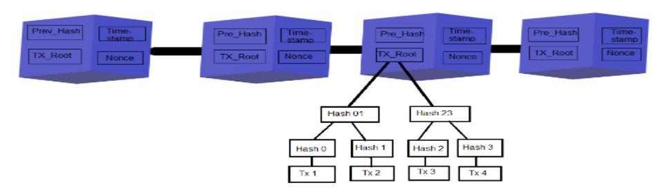
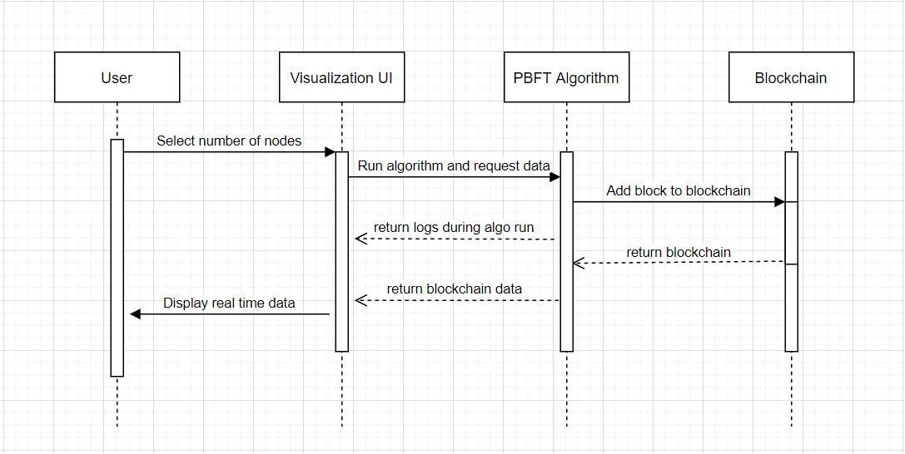

A dashboard is built which depicts how the request is being propagated between the replicas in the network including the transition during each phase when a PBFT protocol runs. A new feature is also added to visualize the blockchain as new transactions are processed and blocks are added.

A 2-tier architecture of the dashboard was built which comprise of :
A presentation layer is the user interface and communication layer of the application which is used by end-users to interact with applications. This layer is responsible for displaying and collecting data from the end-users and sending it to the business layer. For the proposed dashboard, this top-level layer is developed using HTML, CSS and Javascript/React which is capable of running on any web browser.
To understand how the PBFT protocol works, the interface gives a visual idea to the end user about the status of each replica at a given time step in the given protocol along with an overall information flow between the replicas. Users can also view the messages exchanged between the replicas, which will be visible on clicking the diagram at a timestep. At every phase, users would be able to see the status of the node, the messages received, and the decisions made based on the majority formed. The visual representation of the protocol looks similar to the protocol representation normally given in research paper protocol proposals.
At the end of each transaction, the user will get the option to visualize the blockchain formed and maintained.
The open-source implementation of PBFT has no provisions for visualization, hence necessary changes were made to extend it so that it can be visualized. The protocol is run in the backend and the real time log data is integrated with the business layer through socket to be able to visualize it in the front end. Once the protocol is triggered, the log and data from each node is aggregated and sent to the presentation layer to display the workflow and the stats at each node. Parsed log messages as received by the nodes to the front-end listener are published, and in real-time the status of the protocol can be viewed as it proceeds.
